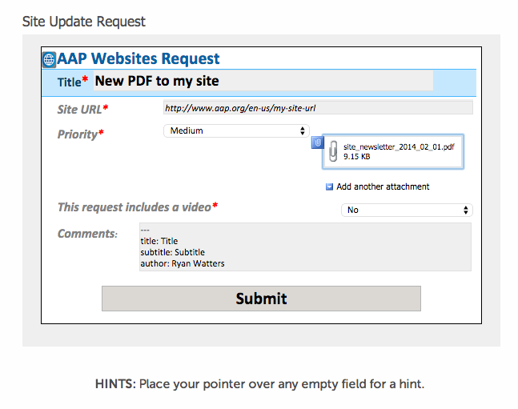
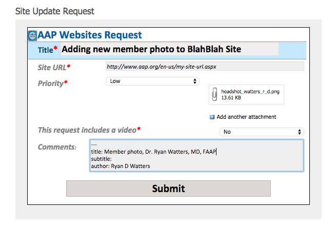

Note: AAP.org cannot accept documents or images larger than 50MB (50,000kb) in size. If you are going to submit PDFs to the document library of AAP.org, it is imperative that you first optimize the documents to fall within the size limits for the site. Optimizing content for the web is the responsibility of the content owner and a crucial part of keeping speed up and server demand down for the entire site collection. You may have to play with the settings within Acrobat to optimize the PDF, especially w/r/t images, which can greatly increase the file size of a PDF.
Submitting new content to AAP.org follows the same process you're already familiar with on AAP.org/websites.
Editorial encourages you to use the discussion board at the bottom of the request page to not only let us know of any issues related to your recently completed request, but also to make suggestions on how we might be able to improve editorial process.
Submitting New Pages to an Existing Site
- Create a web page in Word with the appropriate front matter and naming convention at the top of the document. Remember this only applies to article pages
- Go to the Site Updates Section of AAP.org/websites
- Fill out the form the way you would for any site-related request.

- Attach your .docx (i.e., Word) document to the browser form, add any necessary comments, and press "Submit." Note: The only new content that should be submitted through the request system in Word/.docx format is that of new web pages. Other documents should be submitted as optimized PDFs.
 Images need to be attached separately, named according to the new naming conventions, and optimized according to the new image standards.
Images need to be attached separately, named according to the new naming conventions, and optimized according to the new image standards. - Don't forget to tell us where this new page is going to live; i.e., let us know where the end user will find a link from the site's main navigation.
Submitting New PDFs
- Make sure your PDF is named correctly and optimized for the web.
- Use the front matter generator to create your metadata and COPY the front matter from the blue box after you press "Submit"
- Go to the Site Updates Section of AAP.org/websites
- Fill out the form, attach your PDF, and PASTE the content from the front matter generator into the "Comments" section of the form.
- If the PDF is gated content, add a comment to the front matter or somewhere else in the request.

Submitting New Images
Images follow the same format as PDFs, with the necessary tagging copied from the front matter generator and pasted into the comments section of the request. Remember to name your images appropriately, and observe the new image standards.
